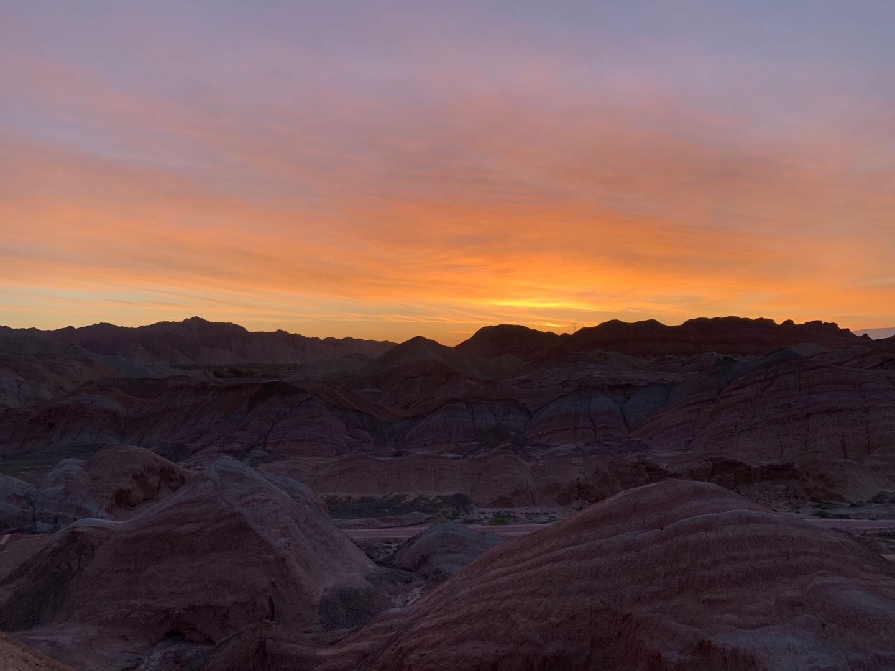
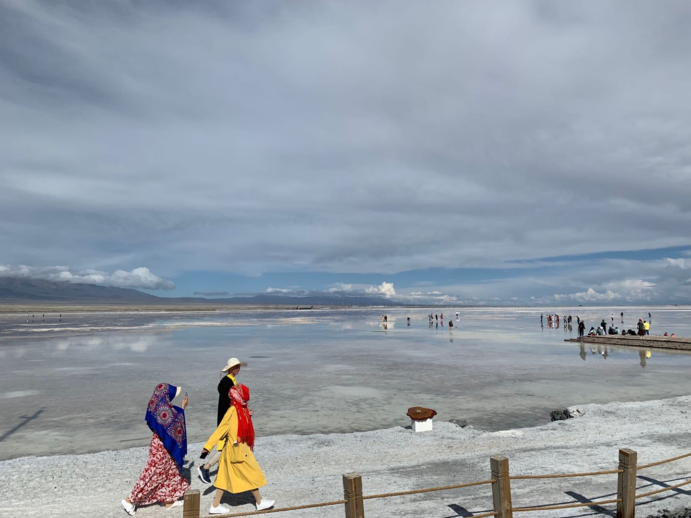
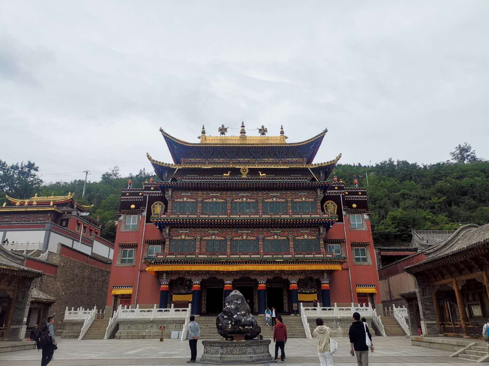
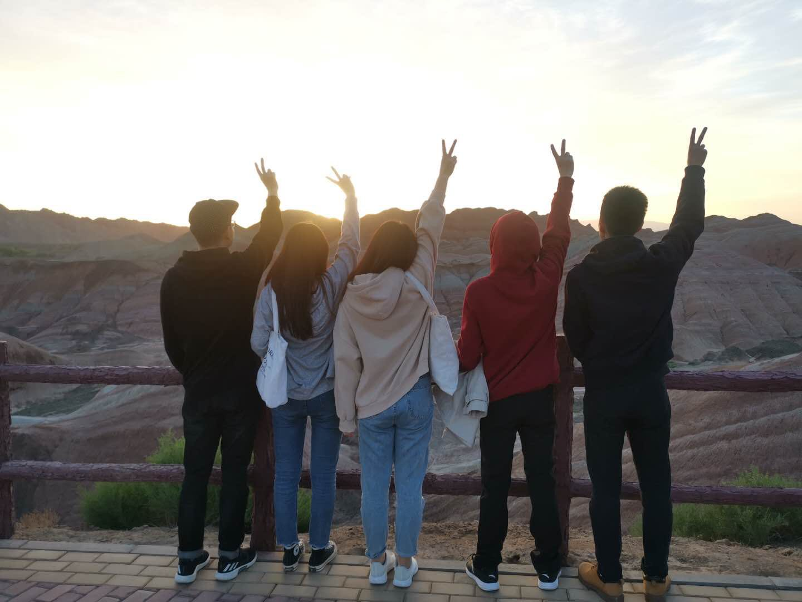

端午青海游
2019-06-15
端午期间与几个朋友去了青海玩。非常感谢这次活动的组织者小叶同学，虽然最后她有事，没去成，但是游玩攻略做的非常成功。这是一次南京与杭州朋友的网友见面会，总的来说，很成功。游玩青海当然要选择自驾游，把沿途美景净收眼底。
验证了万事开头难，在要去的前两天，组织者和她的姐姐因家里有事，临时失约。随后又赶上南京下大雨，航班由晚点变成取消。本来以为要经历八十一难，但当你克服它的时候，心态反而更加开放了。
6月7日先到了西宁曹家堡机场，随后坐高铁到张掖与开车的小伙伴汇合。晚上住张掖丹霞地貌宾馆附近，吃了农家菜，打了火拼双扣（浙江牌），第二天早上5:20出门看日出，坐5:30的大巴通过丹霞地貌的观景台，有一个小插曲，当天是国家的一个节日，门票免费（门票需要50）。张掖丹霞总共4个观景台，我们刚开始去了最大的一个，5.30之后，人逐渐多了起来，但是太阳公公似乎还要睡一会懒觉。自然景象给人最大的感觉就是震撼，这些地貌就是大自然的手笔，经过雨水的侵蚀与日月的氧化，每座山都是一种形态，基于人的想象，有的像“众僧拜佛”，有的是“小布达拉宫”。当然相同的景色看多了，也会食之无味，2个小时之后，我们离开了号称全国十大地貌之一的丹霞地貌。

6月8日中午抵达沙漠功能，体验了一下越野车在沙漠中驾驶的感觉，当然还体验了期待已久的卡丁车。卡丁车赛道总长1公里，时速可达60km/h，在老板的教导下，我们都学会了漂移。年经人在一起免不了竞技，我们的洁鑫同学凭借稳定的过弯技术，摘得桂冠。输给一个平时不开车的女生，留下了一个小遗憾。晚上在祁连县落脚，途中遇上学生高考，学校道路封闭，有趣的事，我们去的时候，正恰逢当地过年，民宿的老娘还给我们送来了过年的美食。一路上会遇到困难，当然也会遇到新奇，这不就是旅行的魅力吗？
6月9日达到此次旅游的高潮，一大早从祁连县出发，开往环湖西路，沿途都在修路，且是盘山公路，开的很慢，但是中间有一个隐藏的景点，4120海拔，这就像是游戏中的彩蛋，令人兴奋。下午沿着环湖西路欣赏青海湖的美景，青海湖，中国最大的内陆湖与淡水湖。青海湖有围栏围着，不要去人工收费的地方进入，往前开一点，有没人管的入口。青海湖的美景真有一种水光接天的感觉，光是欣赏青海湖的美景就不虚此行了。傍晚达到茶卡盐湖，青海四大景点之一（青海湖，茶卡盐湖，孟达天池，塔尔寺）。坐着小火车，看着用盐雕刻的成吉思汗的雕塑，在盐湖上玩耍，拍照。小火车就坐了3.8公里，可想而知茶卡盐湖有多大。

6月9日晚上达到黑马河的青旅，第一次住青旅，环境堪忧，下次可能再也不想住了。10日早上出发青海的第三个大景点–塔尔寺。我是一个无信仰的人，但是当你跨入塔尔寺，也会被前人的成果所震撼，这样的文化究竟需要多少人力，物力，财力。主殿有三尊菩萨，代表着成大事者具备的三个条件，慈悲，智慧，勇气。当然这是听导游瞎扯的。

6月10日结束了我们的旅程。我们总共自驾游1500公里，从西宁机场出发，途经甘肃张掖，祁连县，青海湖，茶卡盐湖，黑马河，塔尔寺，最后回到西宁，反向游玩，这还是组织者的智慧。这是我第一次正儿八经的旅游，带来很多人生的体验，非常感谢同行的小伙伴，小谢，洁鑫，小龙，鸡血，以及未到场的小胖，小胖的姐姐。青山不改，下次见。
